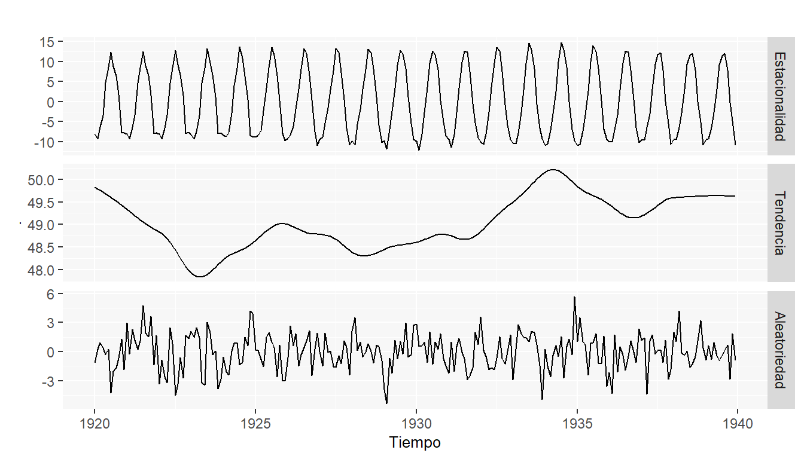
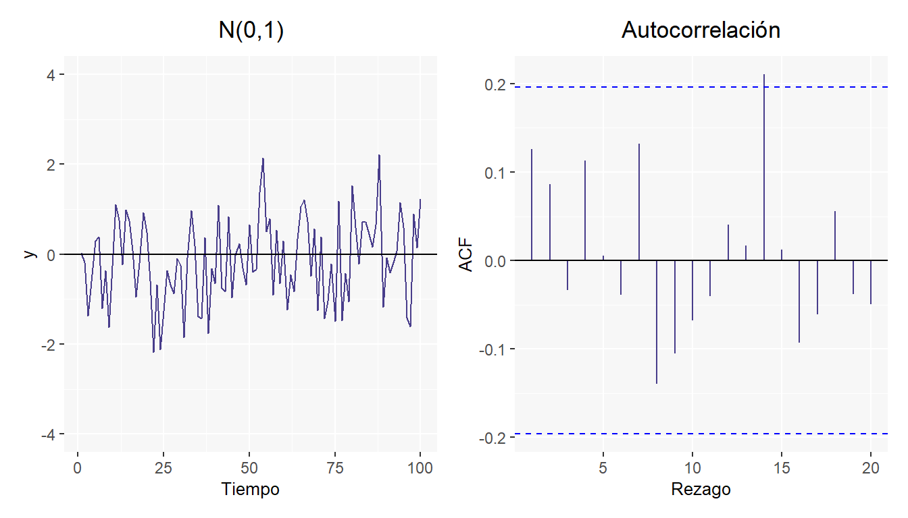

Capítulo 2 Descomposión temporal
El análisis clásico de las series temporales se basa en la suposición de que los valores que toma la variable de observación es la consecuencia de tres componentes, cuya actuación conjunta da como resultado los valores medidos.
Los componentes de una serie de tiempo son:
- Tendencia: La tendencia o tendencia a largo plazo de una serie es por lo común el resultado de factores a largo plazo. En términos intuitivos, la tendencia de una serie de tiempo caracteriza el patrón gradual y consistente de las
variaciones de la propia serie, que se consideran consecuencias de fuerzas persistentes que afectan el crecimiento o la reducción de la misma, tales como: cambios en la población, en las características demográficas de la misma, cambios en los ingresos, en la salud, en el nivel de educación y tecnología. Las tendencias a largo plazo se ajustan a diversos esquemas. Algunas se mueven continuamente hacía arriba, otras declinan, y otras más permanecen igual en un cierto período o intervalo de tiempo.
- Estacionalidad: El componente de la serie de tiempo que representa la variabilidad en los datos debida a influencias de las estaciones, se llama componente estacional. Esta variación corresponde a los movimientos de la serie que ocurren año tras año en los mismos meses (o en los mismos trimestres) del año poco más o menos con la misma intensidad. Por ejemplo: Un fabricante de albercas inflables espera poca actividad de ventas durante los meses de otoño e invierno y tiene ventas máximas en los de primavera y verano, mientras que los fabricantes de equipo para la nieve y ropa de abrigo esperan un comportamiento anual opuesto al del fabricante de albercas.
- Componente aleatoria: Esta se debe a factores a corto plazo, imprevisibles y no recurrentes que afectan a la serie de tiempo. Como este componente explica la variabilidad aleatoria de la serie, es impredecible, es decir, no se puede esperar predecir su impacto sobre la serie de tiempo. Existen dos tipos de variación irregular:
- Las variaciones que son provocadas por acontecimientos especiales, fácilmente identificables, como las elecciones, inundaciones, huelgas, terremotos.
- Variaciones aleatorias o por casualidad, cuyas causas no se pueden señalar en forma exacta, pero que tienden a equilibrarse a la larga.
Se puede observar que de los tres componentes, los dos primeros son determinísticos, mientras que la última es aleatoria.
Adicionalemte, la asociación de estos componentes en una serie temporal puede ser de tipo aditivo, multiplicativo o combinación de los dos anteriores
Entonces la serie se tiempo en un esquema aditivo se puede expresar como:
\[X_{t}=T_{t}+E_{t}+I_{t}\] Mientras que la serie se tiempo en un esquema multiplicativo se expresaría como:
\[X_{t}=T_{t}*E_{t}*I_{t}\] Y un ejemplo de combinación se expresaría como:
\[X_{t}=(T_{t}+E_{t})*I_{t}\] donde \(T_{t}\) es el componente de tendencia, \(E_{t}\) el componente de estacionalidad y \(I_{t}\) la componente aleatoria.
Las siguientes gráficas son sólo otro ejemplo basado en el conjunto de datos nottem, en el cual se tienen las temperaturas mensuales promedio en Nottingham entre 1920 y 1939. Esta serie de tiempo tiene el siguiente comportamiento a través de los años.
 En la gráfica se puede observar que los datos parecen tener un comportamiento cíclico, lo cual es esperado ya que los datos corresponden a temperaturas mensuales. Así mismo el gráfico no muestra que exista una tendencia en los datos es decir no podemos decir que las temperaturas incrementan o decrementan al pasar del tiempo.
La función R “decompose”, obtiene las componentes de tendencia, estacionalidad y aleatoria de una serie temporal a través de medias móviles, y además permite obtener los componentes en base a un esquema aditivo ó multiplicativo. Es una función generica de R, lo que significa que no requiere de la instalación de ninguna librería.
La forma de utlizar esta función es la siguiente:
decompose(x, type = c(“additive”, “multiplicative”),filter = NULL)
La función calcula el componente de tendencia utilizando medias móviles, (si filter = NULL, se utilizan medias móviles simétricas), los índices de estacionalidad son promedios de los indices de estacionalidad que se obtienen al desestacionalizar la serie por el modelo elegido, por último, el componente irregular se obtiene eliminando la tendencia y estacionalidad de la serie temporal.
Nota inportante es que la función requiere que los datos tengan forma de serie temporal.
Ahora aplicaremos la función decompose a la serie de tiempo graficada anteriormente. Las siguientes gráficas representan las componentes antes mencionadas de la serie de tiempo correspondiente a las temperaturas mensuales promedio en Nottingham entre 1920 y 1939.
 La descomposición nos corrobora la presencia de una estacionalidad en los datos y detecta una ligera tendencia a la alza, aunque la escala en el gráfico de la tendencia es muy pequeña muestra que al pasar el tiempo las temperaturas promedio parecen estarse incrementando. En cuanto al gráfico de aleatoriedad la descomposición efectivamente lo presenta como una serie de datos aleatorios.
2.1 Ejercicios
- Una serie de tiempo se puede descomponer en: (Seleccione la opción correcta)
- Parte Multiplicativa, Parte Aditiva y Parte Aleatoria
- Tendencia, Estacionalidad y Parte Aleatoria
- Parte Univariante y Parte Multivariante
- Utilizar los datos en el objeto “AirPassengers” que corresponden a 144 mediciones del número de pasajeros mensuales en líneas aereas y:
- Grafique la serie de tiempo y describa que patrón observa. Comente su código.
- Aplique la función decompose a los datos y describa los hallazgos. ¿Qué puede concluír además de los hallazgos ténicos?
- Grafique la serie de los logartimos de los datos y describa el cambio observado respecto a lo visto en el inciso a)